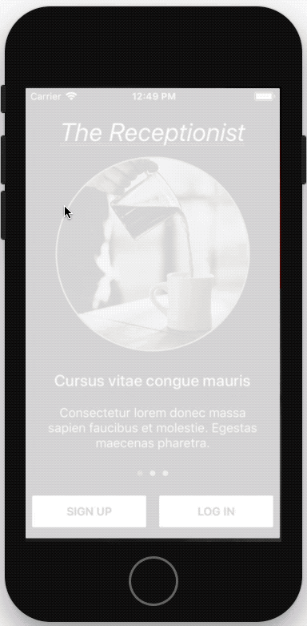
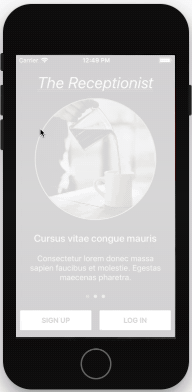

A login guide for ios inspired by Netflix's app. The design is responsive and consistent across all devices (without storyboards). Features:
When the keyboard hides any of the views, the view controller becomes scrollable, this can be seen on the iphone 5s example below.
The form buttons are unclickable and have a dimmed color until all the fields are filled.
Github

 
